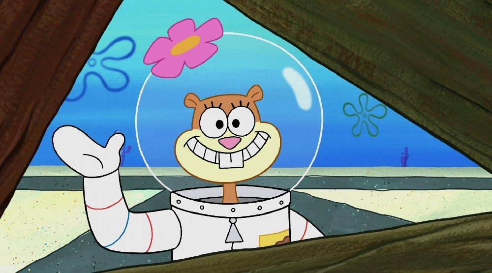
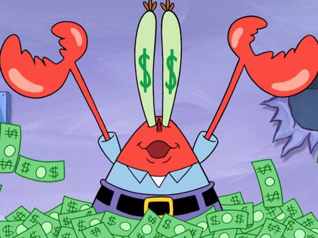
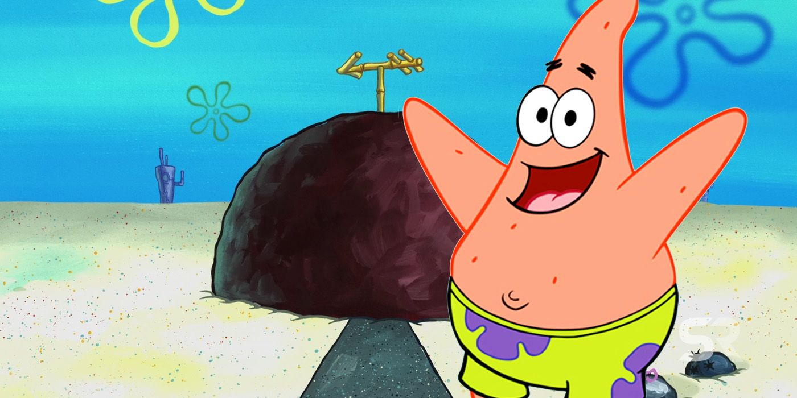
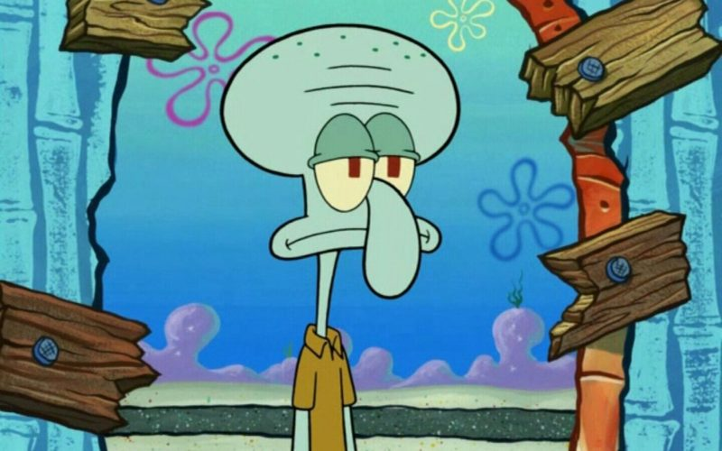
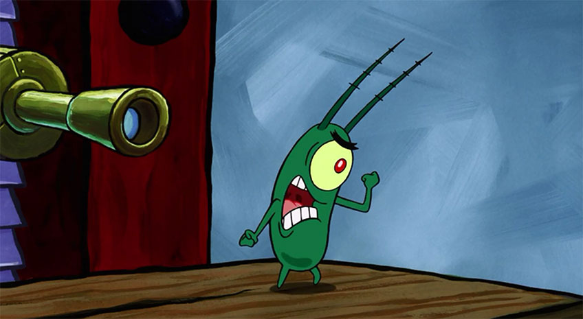
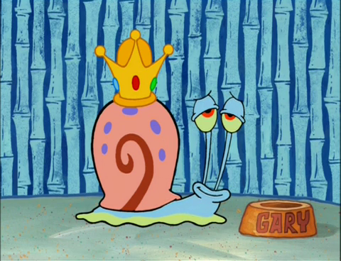
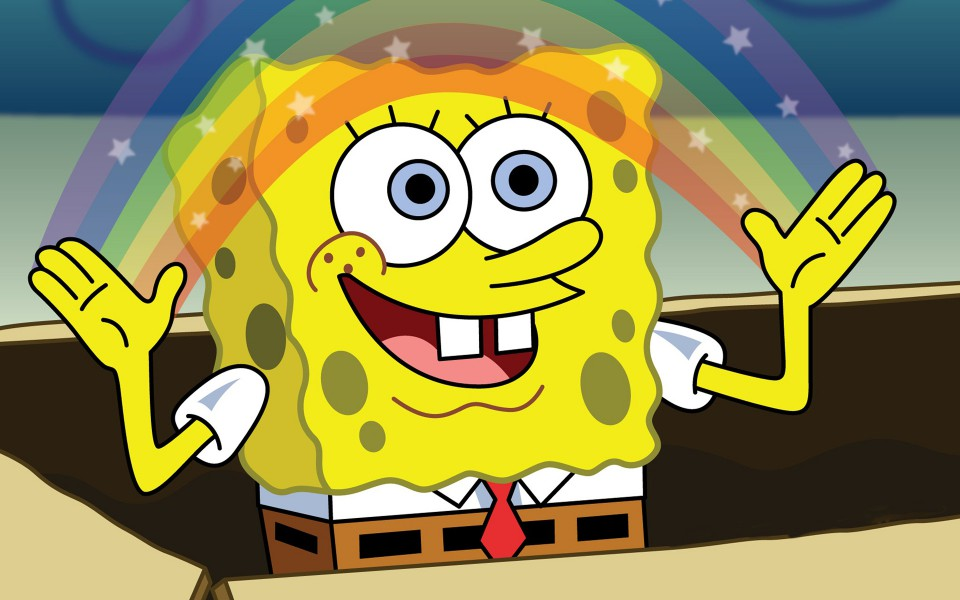

А чи знаєте ви, що насправді цей, на перший погляд нехитрий мультфільм, не такий вже простий.
Чи можливо знайти дитину, яка не знає, хто такий Sponge Bob? Думаю, це майже за межами людських можливостей. На екранах телевізорів або ж обкладинках дитячих журналів, на моніторах персональних девайсів або ж в ігрових магазинах — герой доступний завжди й скрізь, навіть на дитячих соках .
Кажуть, що автори заклали в риси характерів героїв сакральний сенс, а 7 головних героїв мультфільму втілюють в собі 7 смертних гріхів.
Гординею відрізняється білка Сенді Чикс, яка до нестями пишається своєю спадщиною, походженням, рівнем розвитку і положенням в суспільстві.
Жадібність — тут впізнаєш містера Крабса. Його девіз “Гроші, гроші, гроші, гроші, гроші!”. Любов до грошей перетворилася у власника ресторану в одержимість.
Патрік — втілення ліні. Усі ми трохи Патрік, але ця зірка ледарює цілу добу: він днями лежить під каменем, його список справ складається з “Нічого”.
Гнів — характерна риса кальмара Сквидварда. Сквидварда бісить його життя, його робота, його оточення і взагалі все.
Планктон — заздрість. Заздрить містеру Крабса і мріє вкрасти секретну формулу бутерброда «Красті Краба».
А як же обжерливість? Обжерливістю грішить домашня тварина Губки, равлик Гері Вілсон молодший. Мета життя цього створіння — набити пузо!
Найбільш спірний — хіть — навряд чи зустрівся б в асексуальному, дитячому, серіалі. Фанати шоу стверджують, що за цей гріх «відповідає» Спанч. Виною тому — неймовірний оптимізм і жага розваг.
Ось такий непростий цей мультик. Обов’язково перегляньте його разом зі смачними соками SpongeBob від Voda.Love.
Підсумуємо:
- Сенді Чикс
- Гординя
- містер Крабс
- Жадібність
- Патрік
- Лінь
- Сквидвард
- Гнів
- Планктон
- Заздрість
- равлик Гері
- Обжерливість
- Спанч Боб
- Хіть